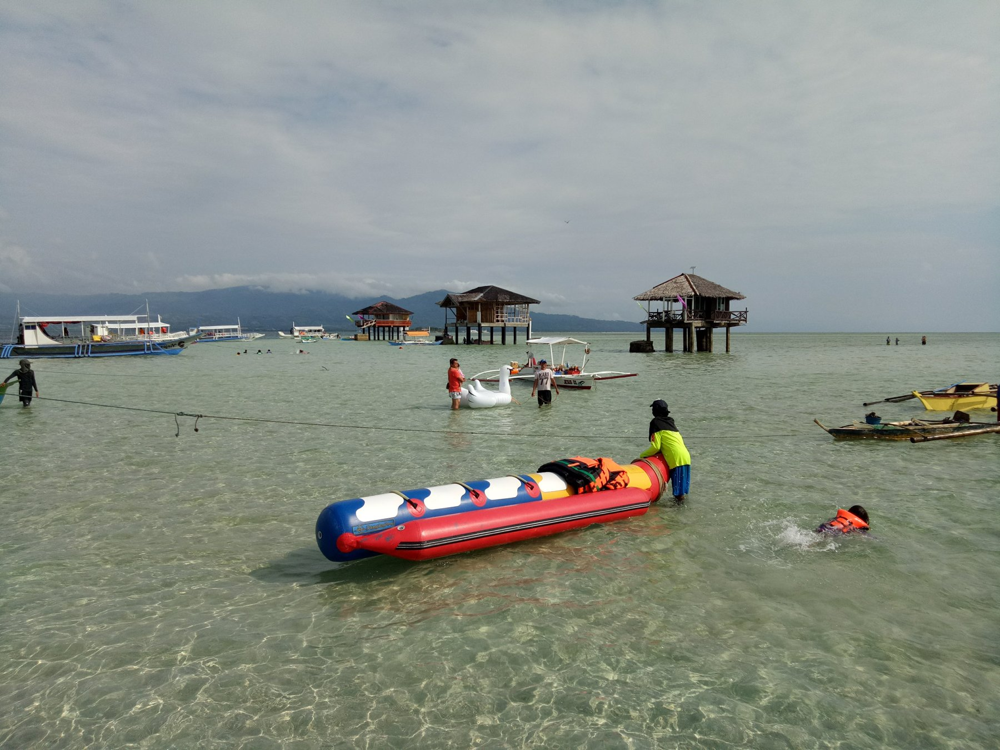
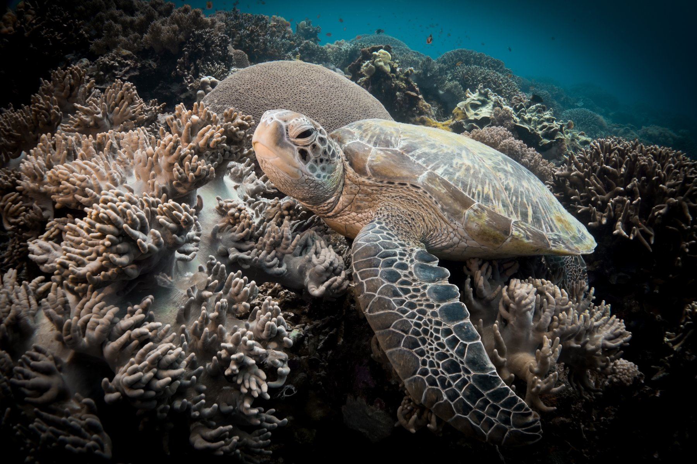
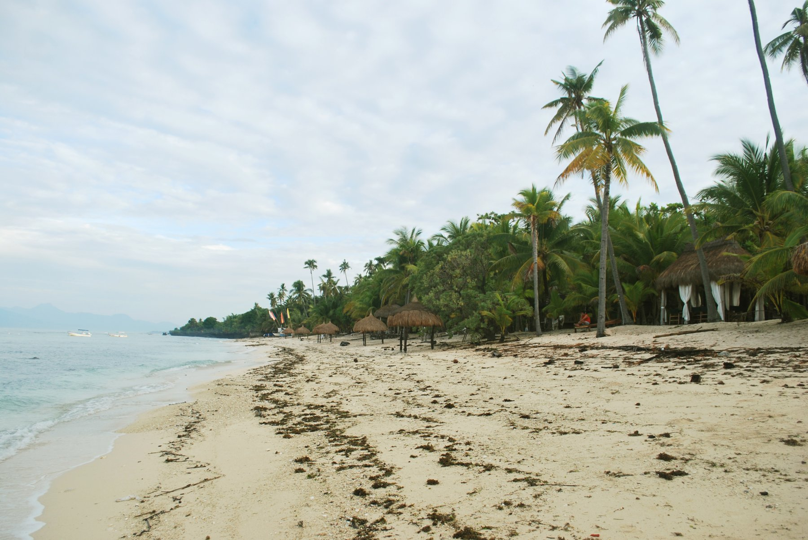

City & countrysideDumaguete
+ ValenciaA change of scenery, close to the city.
+ ValenciaA change of scenery, close to the city.
NEGROS ORIENTAL
Dumaguete–Valencia
Pair Dumaguete’s city charm with Valencia’s cooler air and lush countryside.
DUMAGUETE & BEYOND
Island days, hidden waterfalls, and places worth slowing down for. Discover your next getaway with LUPAD-Ta Travel & Tours.
Explore our toursLocally based. Personally planned.FIND YOUR KIND OF GETAWAY
From mountain air to saltwater days, start with a place that calls to you. Ask us about current rates, availability, and a trip tailored to your group.
NEGROS ORIENTAL
Pair Dumaguete’s city charm with Valencia’s cooler air and lush countryside.

SANDBAR ESCAPE
Make room for wide horizons, shallow turquoise water, and a day out at sea.

MARINE ADVENTURE
Discover a beloved island destination known for its marine life and snorkeling.

ISLAND DISCOVERY
Follow the island’s easy rhythm, from beautiful beaches to green inland escapes.
MEET YOUR TRAVEL ARCHITECT
Based in Dumaguete City, LUPAD-Ta Travel & Tours helps turn travel ideas into thoughtfully planned experiences, with a focus on domestic and international tourism.
Whether you’re drawn to a nearby island or planning a bigger journey, talk to our team about your destination, schedule, and travel style.
Start with your interests, dates, and group.
A Dumaguete-based team you can contact directly.
Discuss rates and inclusions before confirming.
LET’S MAKE IT HAPPEN
Tell us your destination, travel dates, and number of guests. We’ll help you work out the details.